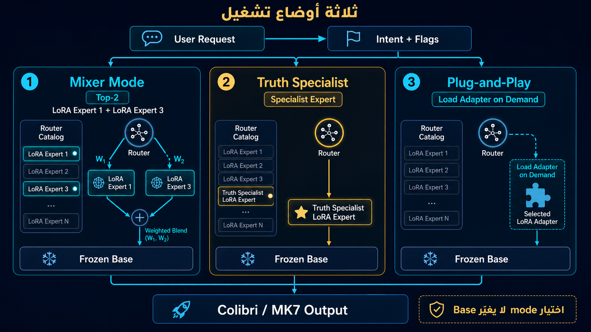
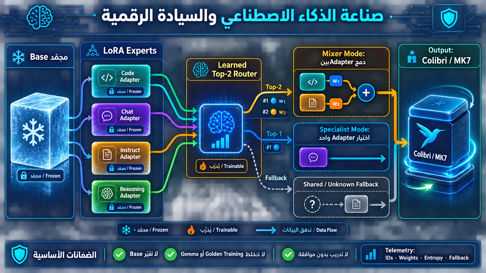
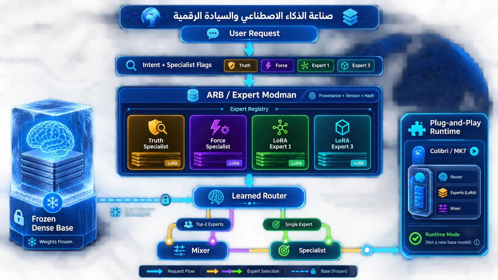
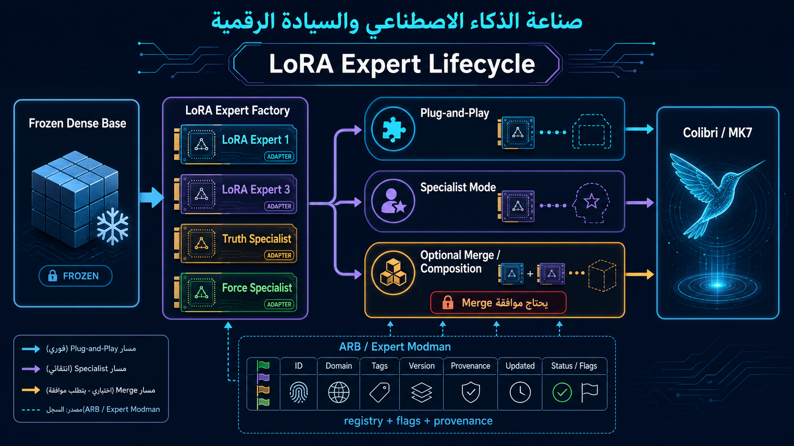

صناعة الذكاء الاصطناعي والسيادة الرقمية
Colibri Router Lab — MK7 Frozen Base + LoRA Experts
VERIFIED Runtime7 LoRA ExpertsTop‑2 MixtureSpecialist Modeبوابة المشروع
هذه هي صفحة Landing الخاصة بالتوثيق. منها ننتقل إلى التقرير، والـInfographics، ونتائج Router v1.1.
افتح التقرير الكامل ← README المشروعالنتائج الحالية
100%Validation Top‑1
100%Test Top‑1
85.71%Challenge Top‑1
7/7Experts Loaded & Frozen
خرائط النظام والـInfographics
Router Modes

LoRA Mixer

Expert Registry

Expert Lifecycle

المساران
Mixture of Experts
Qwen Base مجمّد → MK7 Router → اختيار Top‑2 → مزج Adapterين → إجابة مركبة.
Specialist
Qwen Base مجمّد → MK7 Router → اختيار Adapter واحد → إجابة المتخصص.